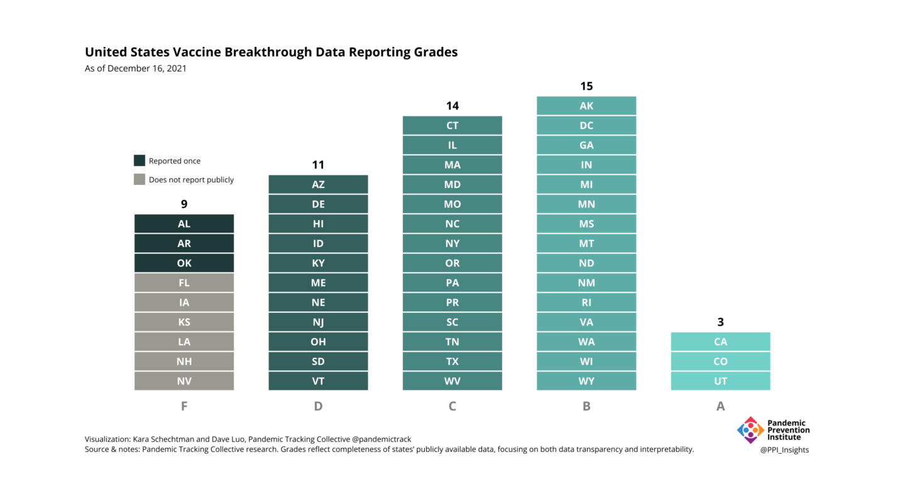
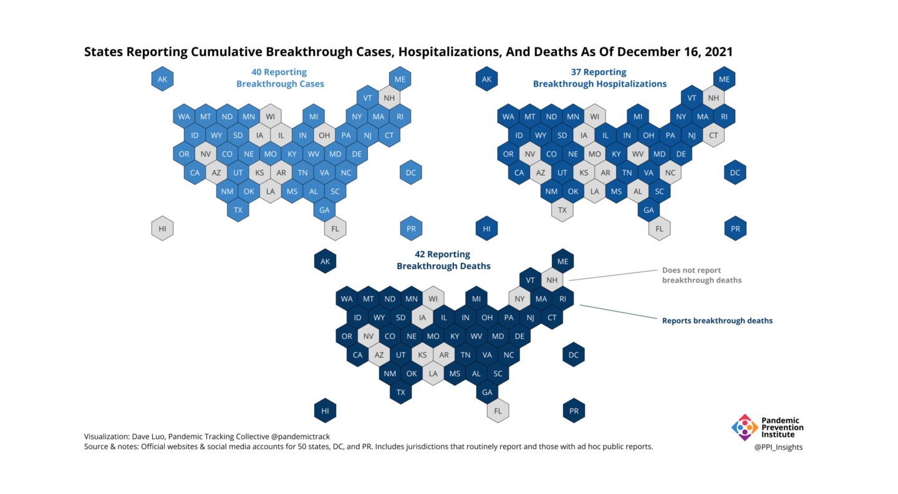

Tracking State Reporting of Covid-19 Vaccine Breakthrough Infections
Covid-19 vaccine breakthrough infection data provided by U.S. jurisdictions is incomplete and unstandardized. We are releasing a reporting scorecard evaluating state data with the goal of improving data transparency and interpretability.
This piece is originally published at rockefellerfoundation.org/case-study/tracking-state-reporting-of-covid-19-vaccine-breakthrough-infections/
Today, we are releasing a reporting scorecard that evaluates US state data reporting for Covid-19 breakthrough infections (BI) against best practices we have identified.1 We assign states letter grades based on their alignment with these best practices for reporting BI data.2 The scorecard with states’ grades, as well as breakdowns of the criteria they meet, will be updated regularly. You can find it here.
1 While we use the term “breakthrough infections data” as a shorthand for data about Covid-19 cases, hospitalizations, and deaths after vaccination, it is important to remember that data does not reflect all post-vaccination infections because of limited testing.
2 We use “states” as a shorthand term for both states and territories.
We are launching this scorecard because of the lack of high-quality breakthrough data in the United States. While the CDC shares some helpful information on breakthrough rates, that information is challenging to aggregate on a nationwide scale; as a result, it is updated infrequently and cannot be broken down by state. State-provided BI data is faster and more granular than federal data, but like with other state Covid-19 metrics, also highly incomplete and unstandardized. The ability to see local, fast-updating data on breakthrough infections is critical to effective pandemic response. We hope the scorecard will encourage states to share more and higher-quality BI data in support of that mission.
What we’re grading
Our scorecard evaluates public BI data reporting for all 50 states, as well as Washington DC and Puerto Rico (we exclude any US jurisdiction with a population of less than 500,000). We assign states whole letter grades A through F; if states meet every criteria we have identified, they can earn an A+. This letter grade solely reflects states’ alignment with BI reporting best practices and does not evaluate how well a state is responding to Covid-19 overall.
Table 1. Scorecard grades and their meanings
We break down best practices for reporting into two categories: data reporting, which addresses what states are sharing, and data presentation, addressing how they are sharing it. These criteria will be regularly reviewed to ensure they reflect the most pressing priorities for data on breakthrough infections—for example, we may begin tracking reporting on infections after third doses. Here’s a summary of the criteria we are including in each category right now and why they are important. You can find the details of how they are evaluated on the scorecard page.
Data Reporting
- Providing cumulative breakthrough cases, breakthrough hospitalizations, breakthrough deaths, and vaccinations: When a state can produce these cumulative counts, it indicates the data reporting systems it uses to produce vaccination status breakdowns are in good order.
- Providing cumulative percentages of Covid-19 cases, hospitalizations, and deaths among vaccinated and unvaccinated individuals: These percentages are important for public communication about the absolute and relative risk of Covid-19 infection, hospitalization, or death in vaccinated and unvaccinated populations.
- Providing time series of cases, hospitalizations, and deaths in vaccinated and unvaccinated people: Case, hospitalization, and deaths data by vaccination status over time are perhaps the most important breakthrough data for both public and policymakers alike—they allow for tracking absolute and relative changes in the incidence and severity of breakthrough Covid-19 infections.
As with cumulative data, states can report time series data either as raw numbers of outcomes in vaccinated/unvaccinated population and the number of people in that population, or as rates dividing those two numbers. But rates can be calculated in many different ways, so without access to underlying data, they can be impossible to replicate or interpret. For that reason, for a state to get full credit for a time series, states had to report both a rate and all underlying data that went into that rate (i.e. number vaccinated over time and number of breakthrough cases over time).
Data Presentation
- Providing definitions for breakthrough cases, breakthrough hospitalizations, breakthrough deaths, vaccinations, and rates: Not all states define their Covid-19 metrics the same way, so it is important for states to provide definitions of all metrics.
- Making downloadable data available: Providing data through an API or downloadable CSVs increases transparency and enables researchers to use it in their own analysis.
- Regularly reporting data: Because timely data is important for understanding trends, states that do not share data at least monthly automatically receive an F.
What we found

Our analysis of state reporting found that most states are now reporting breakthrough data—with 43 out of 52 juridictions now regularly sharing data, up from just over half that in the summer. Those states almost all report important cumulative counts of cases, hospitalizations, and deaths. The majority of those states also report time-series data, with 34 states reporting at least one metric over time.

That so many states are reporting data is impressive given the uphill battle that state health departments have faced in collecting breakthrough data. Over the past decades, state health departments have been chronically underfunded, resulting in out-of-date, badly-maintained data systems for infectious disease surveillance. When we reached out to states to confirm we had correctly assessed their reporting, some shared that they do not have the resources to compile regular updates. To regularly capture, link, and publish this critical data, states need federal support, like that provided through the CDC’s Data Modernization Initiative or upcoming data infrastructure projects under the American Rescue Plan.
Even given infrastructural obstacles, one easy way many states could improve their grades is by making downloads available of all the data underlying their time series—data they must already have to produce their rates. While 34 states report at least one of incidence, hospitalization or mortality rates by vaccination status over time, only three states make underlying data available for all the rates they report, and only six states make any data downloadable.
Currently, only three states meet the standard for an A; if states made underlying data downloads available for all the rates they are already reporting, 20 states would receive this grade.
Why it matters
Throughout our experience collecting Covid-19 data, we have seen time and again that providing consistent, interpretable, high quality data earns the trust of the public. BI data shows the clear trend that Covid-19 hospitalization and deaths are largely concentrated in unvaccinated individuals. Sharing that data is a critical part in overcoming vaccine hesitancy.
Breakthrough data has other urgent policy implications: It provides crucial early warning signals for possible changes in transmission, vaccine-conferred immunity, and disease dynamics. To understand the risk that vaccinated individuals face from variants like Delta and Omicron—and to assess impact on vaccine effectiveness of any new variants that may emerge—we need access to timely and local breakthrough data that states can provide.
Working with very little, over the past two years, state health officials have pulled off superhuman feats to share critical Covid-19 data with the public. We hope they will continue their track record of exemplary public service by improving Covid-19 breakthrough data so that it is more transparent, standardized, and actionable.